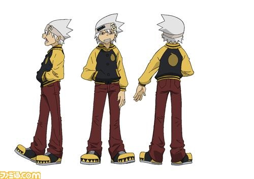

소울 이터(Soul Eater)

소울 이터의 두 주인공 중 하나. 성우는 드라마 CD에서는 호시 소이치로, 애니판에서는 우치야마 코우키/임하진/마이카 솔러소드.마카 알반의 파트너로 다른 무기들과 마찬가지로 평상시엔 인간 모습을 하고 있지만, 낫으로 변하는 무기다. 사신님의 무기인 데스사이즈를 목표로 한다. 사무전의 학생이나 수업도 자주 땡땡이치고 선생에게 반항도 좀 하고 컨닝도 하는 등 그렇게 성실한 학생은 못 되는 모양. 본명은 소울 에반스. 소울 이터라는 이름은 사무전에서 쓰는 예명이다. 이터널 페더가 이 이름을 바보같다며 까는데, 무기들의 최종 목표가 악인 99명과 마녀 1명 도합 100명의 영혼을 먹고 데스사이즈가 되는 것임을 고려해보면 까일 만한 예명. 외모 때문에 무뚝뚝하고 불만이 많아 보이며, 친하지 않은 상대와는 대화를 자주 나누지 않고 퉁명스럽기도 하다. 그러나 잘 보면 상냥하고 배려심 있는데 특히 마카에게 이런 경향이 강하다.마카 왈, '성격은 삐뚤어졌지만 항상 마지막엔 내 편이 되어주는 무지 좋은 녀석'. 자신을 쿨한 남자라고 지칭하며 '쿨하게', '쿨한' 등등을 입에 달고 살지만 초반부에는 단순한 바보의 모습만 보여 주었다. 그러나 점점 '쿨'이 대사에서 차지하는 비중이 사라지는데, 아이러니하게도 그럴 수록 실제 성격은 쿨해지고 있다